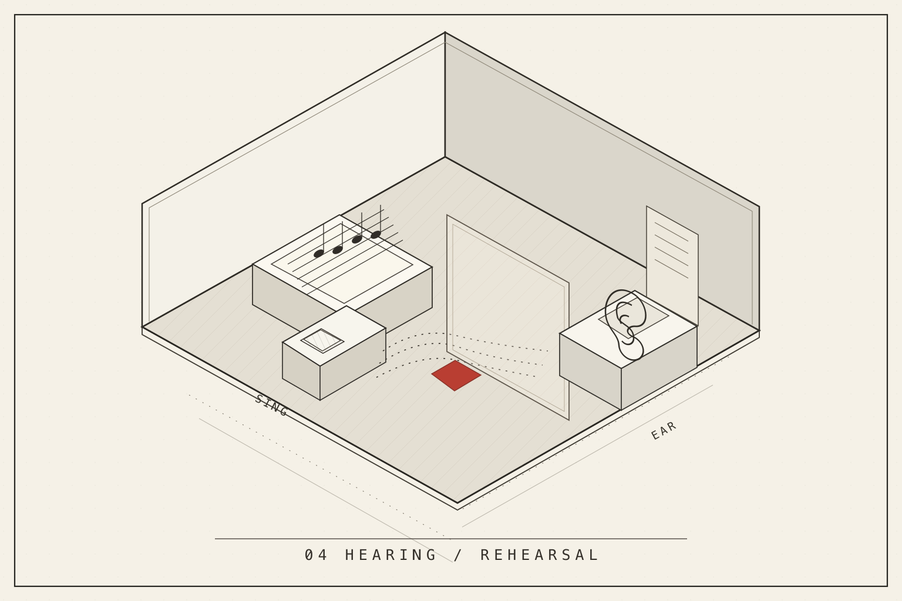

The Ear That Learns
On a five-second phrase, an unfinished voice, and what a teacher asks us to hear.

At 2.15 seconds, in a recording barely longer than an inhalation, a consonant is supposed to begin. It is the m in mi. Until then, the little voice has carried la across two pitches without repeating its consonant. A third syllable, na, will follow. This is not an aria. It is a five-second rehearsal, and it has made us confront a question that no amount of successful sound generation can answer: did the intended syllable actually arrive in the ear?
Sing can make the recording. It has a native procedural voice, a score with four MIDI 2.0 notes, timed phonetic states, and a reproducible digital output. What it cannot yet do is confer intelligibility upon itself. If a machine knows the score before it listens, it may recognize the score instead of the sound. We therefore developed Ear as the separate listening boundary of Sing. The difference between them is where this essay begins.
Here are three actual renderings of that one short phrase. They were made by the Sing synthesizer, not by an opera singer; none is evidence of a naturalistic or qualified singing voice. They differ only in what the renderer is instructed to do with articulation and expression. Select the takes, follow the sound-addressed commentary, and return to the same instant in another performance. The player serves high-quality AAC listening derivatives made from checksum-verified original PCM; Ear's measurements refer to those source WAVs, not the compressed playback stream.
One score, three attempts
Articulated
Loading source-bound original audio witness.
Private research playback only.
Comments on the sound
Choose a time to hear the actual passage. A timestamp names the recording position; Ear's acoustic measurement is not a lyric transcript.
- Listening annotations require JavaScript. The recorded source identity remains available in the accompanying evidence.
Write a listening observation and copy it with the selected take, exact playback time and original WAV checksum. This essay stores and sends no comment.
When the consonant changes
The plain take gives the initial comparison. On the second note, at 1.15 seconds, the vowel continues while the pitch changes: one syllable and two notes. This seemingly elementary fact matters. A music renderer can trigger four notes and mistakenly begin four syllables; a singer who understands melisma does not have to do that. The note belongs to the score, but the articulation belongs to the word.
Then the m begins. In the plain take its nasal onset is comparatively short. Sing's articulated version makes that onset longer and shapes its transition into the vowel. The voice itself remains procedural, but the contrast is real: in Ear's companion measurement, the onset's share of high-frequency energy falls by about eighty-four percent. At the following n, the reduction is about fifty-seven percent. The sustained vowels, meanwhile, remain relatively stable. Ear therefore selected the articulated take as the next acoustic development baseline.
We can say exactly what this decision means, and exactly what it does not. It means the two consonant regions now differ in a measured way from the first attempt. It does not mean that a person could understand mi or na without the text. The shipped Ear worklet observed activity, while a separately scoped comparison worklet measured spectral features. Neither was a source-blind phoneme recognizer. With the expressive version, where pitch bend, breath and vibrato enter, Ear found nineteen spectral onset candidates rather than five. There are still only three intended syllables. An onset counter that congratulated itself for finding nineteen words would be listening to the wrong thing.
This difference between noticing and understanding is easy to miss when a machine reports numbers so confidently. It is also the reason the project has begun to resemble a singing lesson more than a software demonstration. We had made a voice change its sound; now we needed to learn what constitutes a correction.
Listening as an apprenticeship
In a European singing studio, the teacher does not usually begin with a general theory of acoustics. A phrase is sung, repeated, slowed, sometimes spoken, sometimes reduced to a single vowel. The pupil listens, attempts the gesture, hears an objection or a new demonstration, and attempts it again. The teacher's correction is specific to a voice and a passage. Musical technique is not detachable from the encounter in which someone learns to make a distinction.
Italian bel canto offers a useful comparison for the passage between the second and third notes. Its long cultivation of vowel continuity asks a singer to keep sound alive even as pitch and dynamics change. But a vowel must eventually make room for a consonant. Our tiny score has no historical Italian phrase and its synthetic voice has no living breath. What it shares with the lesson is a problem of attention: what remains continuous, and what must be newly articulated? One can return to the same two seconds and listen for that relationship.
In German Lied and operatic declamation, the same question moves toward language itself. A spoken word arrives already charged with stress and meaning before it enters the score. Consonant clusters are not clutter to be smoothed away; they can be the dramatic event. A sung Licht is not simply a sequence of sound classes with added pitch. It is an utterance, with a physical and rhetorical beginning. The machine that only measures a vowel's duration misses why that beginning mattered.
Spanish lyric theatre adds a further provocation. In zarzuela, speech can become song and then speech again within the same dramatic scene. One performer crosses the boundary while remaining the same character. It was natural for Sing to explore resynthesizing naturalistic speech toward song, but those experiments taught us the opposite of an easy technological triumph: moving the spectrum toward a stable vowel could make the word less recognizable. The sound grew more like singing while the language grew less clear. The voice cannot be rescued by an attractive timbre alone.
The European traditions do not form one pedagogy, and none of the three Sing recordings above performs bel canto, German declamation or zarzuela. They suggest instead why those practices are worth studying: a lesson has to notice something more particular than whether the output resembles a song.
The rhythm is spoken first
That realization made an encounter with tabla pedagogy especially fruitful. In North Indian tabla teaching, the player may recite the bols that name rhythmic strokes before touching the drums. Hand gestures mark the tala, a cycle in which positions have relationships, not merely timestamps. The student repeats a phrase in the voice, feels where it returns, varies it within its rhythmic grammar, and then plays. The spoken structure is not a crude recording of a future performance. It is an active means of knowing it.
This does not turn tabla syllables into opera phonemes, any more than it makes a raga into a Western scale. Hindustani vocal riyaz belongs to its own teaching and listening practices: the drone, the swara, the voice approaching and returning to a note. But both remind us of something our digital archives can obscure. Transmission is not the storage of a finished sound. It is the repeated, often embodied relation between a demonstration and an attempt. Its smallest unit can be a gesture a student is asked to make once more.
The engineering consequence is surprisingly concrete. A teacher's reference, the student's recording, a musical score, a rhythmic cycle and an examiner's judgement are not interchangeable files. We must be able to connect them without giving the examiner the answer in advance. What the lesson supplies openly to Sing must not secretly enter Ear's source-blind test. A repetition can be compared with a previous performance; it cannot be called improvement merely because the same model made both the music and the verdict.
The reference that could not be read
The Japanese recording preserved in Ear makes the danger visible. It is a real singer, independently recorded, accompanied by a phonetic annotation and a separate human revision of its timings. The original sequence counted seventy-one non-pause phonemes; the revision seventy-three. Many boundaries moved substantially. The disagreement does not mean human listening has failed. It means that the annotation is itself an accountable human interpretation rather than a transparent substitute for sound.
Ear's available experimental phoneme decoder was configured for English. It could observe vocal activity in the Japanese material; it could not thereby recognize Japanese phonemes. Feeding it the intended Japanese labels during inference would turn the test into a rehearsal of its answer sheet. The project kept that recognition gate blocked. There is real source evidence, but there is not yet independently qualified Japanese recognition, still less a qualified singer.
It matters that this refusal arrives in the midst of an argument about pedagogy. A good teacher does not pretend to have heard a consonant that remains uncertain; a good student is allowed to try again. The reference gives us something real against which future listening can be tested, but the act of listening must be performed without borrowing the reference's certainty.
A second attempt, not a verdict
Return once more to the articulated mi at 2.15 seconds. The change is modest; the question it opens is large. We can name what Sing did, reproduce the same PCM, and describe what Ear measured. We cannot say that a tradition has been learned or that the music is good. Our first teaching contract therefore describes a cycle rather than a graduation: demonstration, imitation, independent listening, a bounded correction, another attempt, and finally a new phrase with which to test transfer.
It is tempting to imagine a future machine that produces a finished aria at the press of a button. This is a different ambition. We want instruments capable of a relationship in which hearing changes the next act of making. Sing should not be ashamed of an unfinished sound. Ear should be free to say that it cannot yet tell. And the writer should still be able to listen, contest, teach and decide what may enter an edition.
In the old recording the m will begin again at 2.15 seconds, exactly as before. In a real lesson the next attempt would not have to be identical. Perhaps that is the point at which an instrument begins to learn.